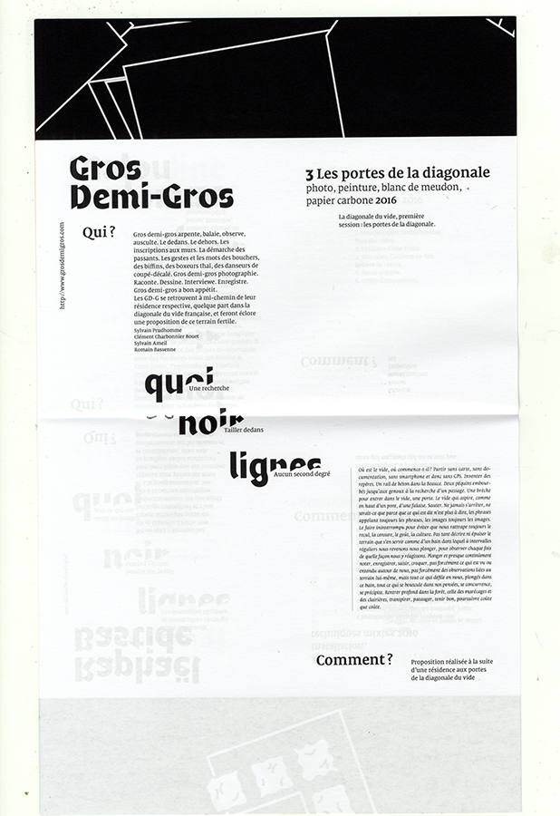
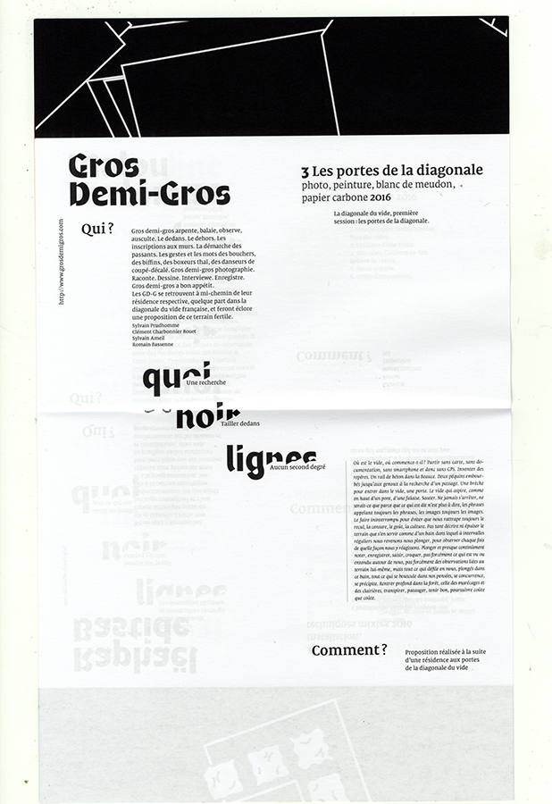

Projet à l'origine de la technique du photogramme. Questionnement
et approfondissement techniques
et conceptuels autour de ce procédé. Questionnement autour de la lettre
en tant que forme,
son apparition, sa disparition, en tant qu'entité blablabla